ABSTRACT: American exceptionalism is defined as the "idea that the United States of America is a unique and even morally superior country for historical, ideological, or religious reasons." (Encyclopedia Brittanica)
Coined by Alexis de Tocqueville in his book Democracy in America (1835), this photo essay explores how the idea of "American Exceptionalism" is projected, conjured, manipulated.
What kind of magic is necessary to perpetuate this ideal?
And who is the magician?
DESCRIPTION:This photo essay explores the idea of American Exceptionalism through photographs I’ve taken around the country, from Minneapolis to Houston. Rather than presenting America as simply superior or extraordinary, this collection asks what it means to believe in the promise of a country built around freedom and opportunity and strength, and how those questions manifest around us.
Visual themes explore power, protection, inclusion, exclusion and opportunity through symbols, signs, flags, monuments adjacent to personal photos of my friends and family.
These photos are not in any particular order. A sculpture in the Winston Salem airport called “Slice of Heaven”, graduation ceremony of nursing students (including my sister), the Alex Pretti street memorial in Minneapolis, Delaney Detention Center, my son at the Washington Memorial in his super hero pose, Kinky Tuesdays at Numbers Night Club in the Montrose area of Houston, friends and family reflection, a Sears photo of my family from the 1980s (South Asian and Filipino), junkyard dogs protecting a broken red car, Fantasy store in Houston.
This collection of photographs creates a portrait of a nation in flux, that is proud, complicated, delusional, diverse, violent, unfinished and in mourning. It invites viewers to consider the distance between the ideals America claims and the experiences of the people who live within it, in moments of celebration, conflict, grief, connection, and hope.
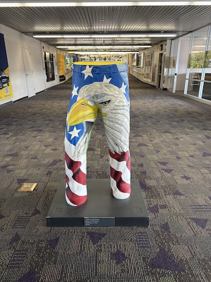
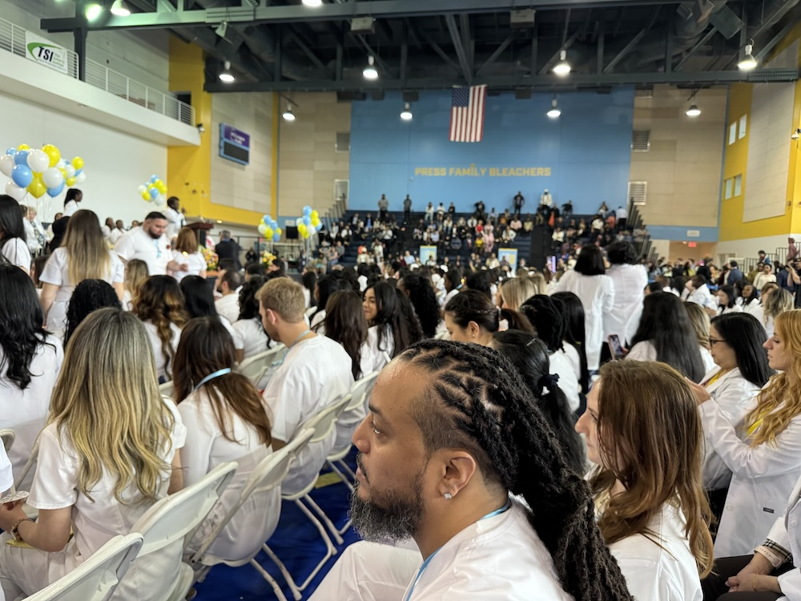
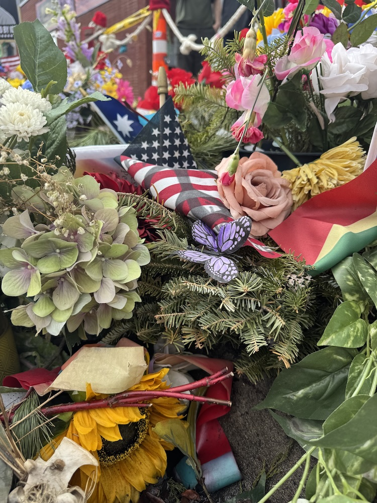
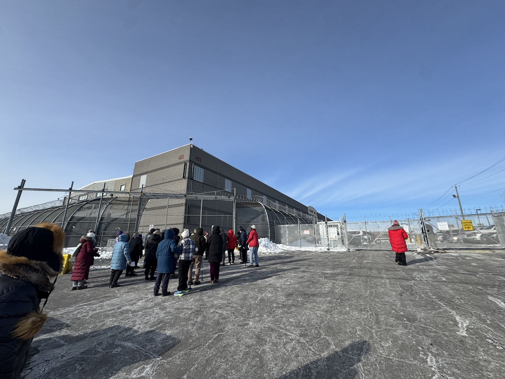
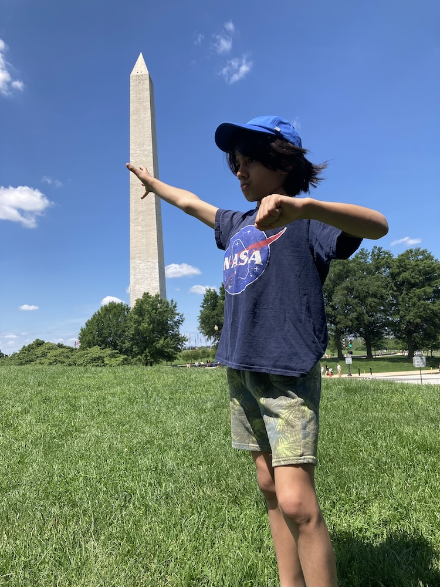
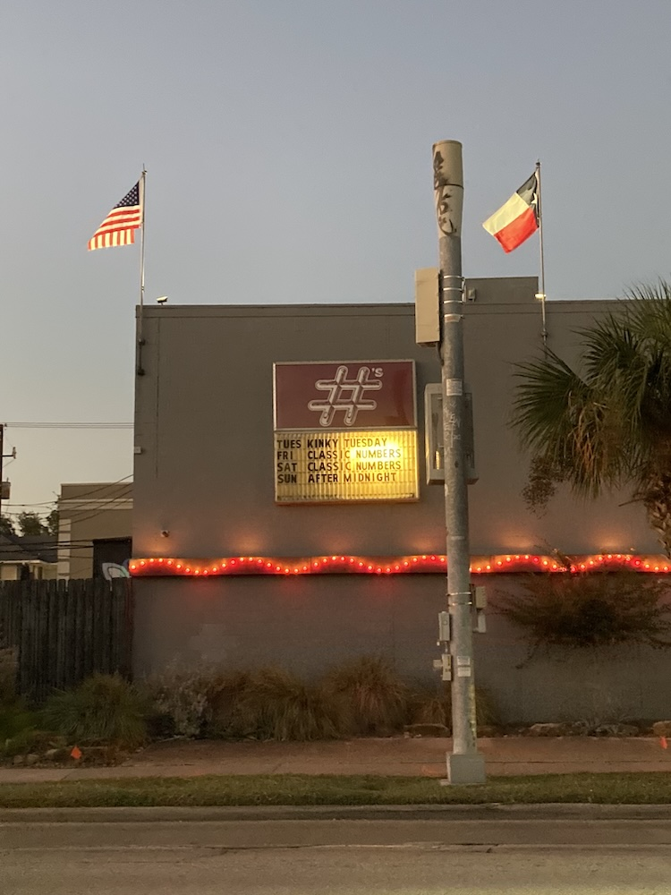
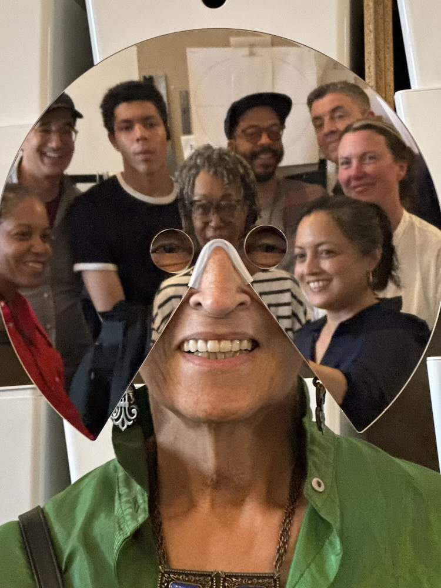
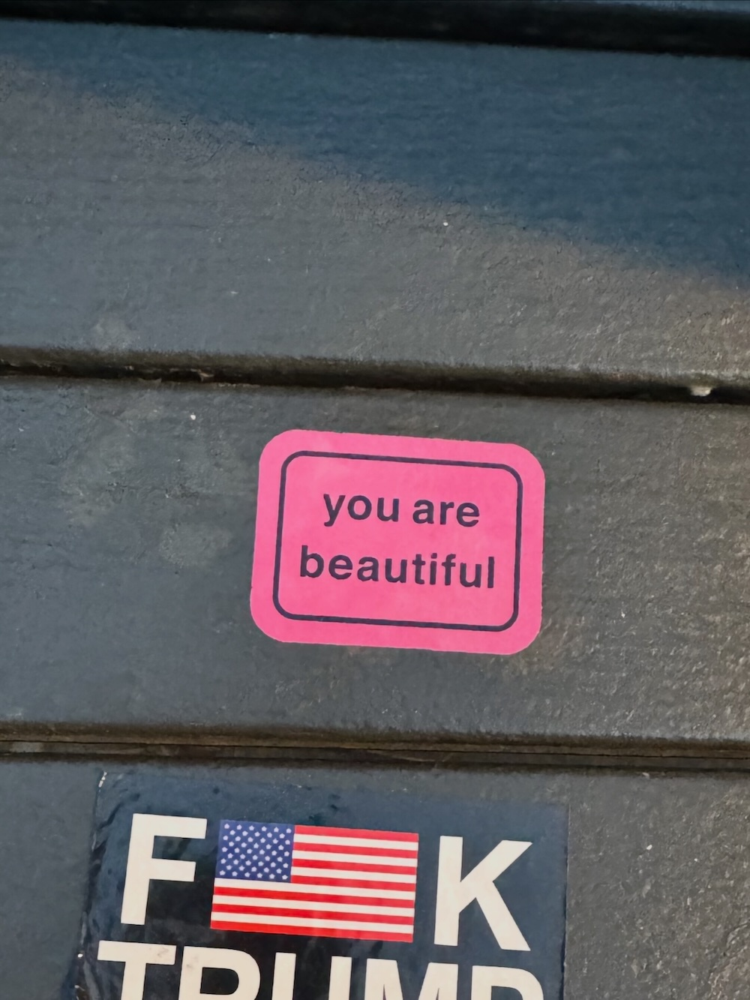
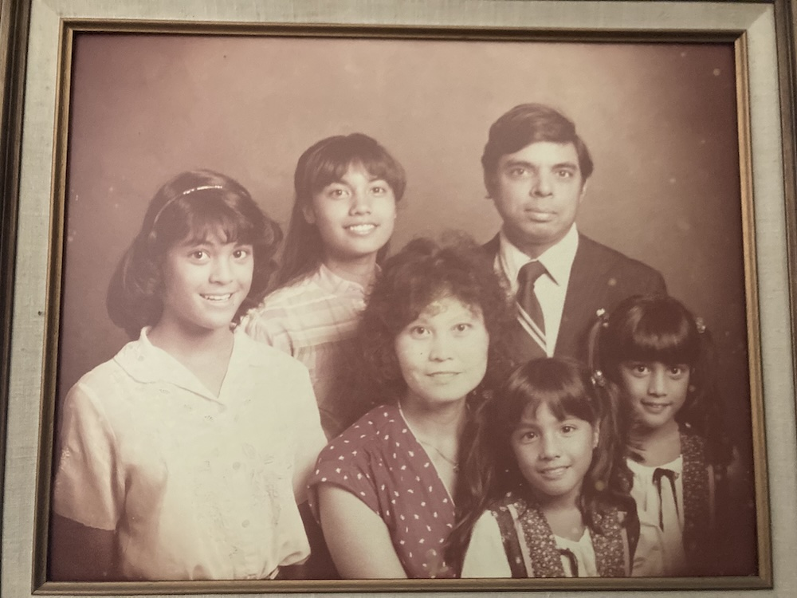
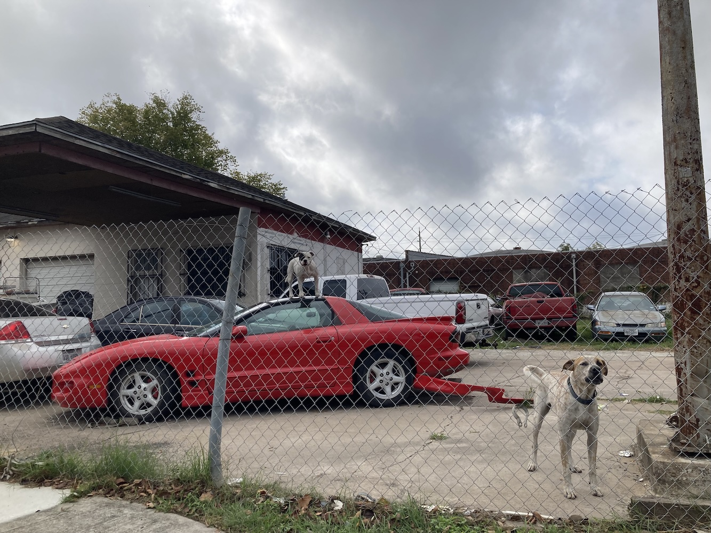
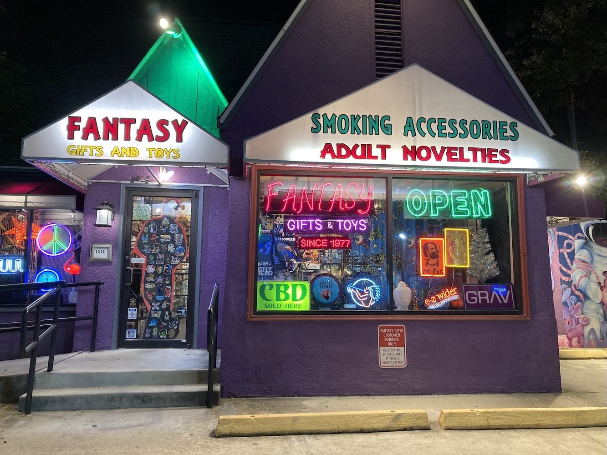
Karla Murthy is an award winning documentary film director and news producer. Her work was described by the Columbia Journalism Review as “compelling, informative and compassionate.” She began her career working for the veteran journalist Bill Moyers and has worked as a producer, shooter, and correspondent for several PBS news programs. She was nominated for an Emmy for her report “The Battlefields” on farmworkers fighting for better wages in Immokalee, Florida.
Her directorial debut, The Place That Makes Us, premiered on the public television series America ReFramed and screened at festivals including DOC NYC, Big Sky, and the Cleveland International Film Festival and at the United Nations World Cities Day Event. The film earned multiple awards, including Best of the Festival at Arlington, Best Feature at Better Cities, and Emerging Documentary Filmmaker at Woods Hole.
Karla directed and edited the short documentary Love, Jamie, about a transgender artist incarcerated in Texas. The film premiered at OUTFEST LA where it won the Grand Jury Prize for Outstanding Documentary Short, and was featured in People, THEM, Hyperallergic, and Texas Monthly, which named it “one of the best short documentaries.” It is currently streaming on PBS American Masters.
Her latest feature, The Gas Station Attendant—inspired by her father—is a co-production with ITVS, Firelight Media, and the Center for Asian American Media. It premiered at Sheffield DocFest 2025 in the International Competition and won the Special Mention Jury Award. It also won Best Documentary Feature at the Nashville Film Festival and the San Diego Asian Film festival. The film is currently screening at festivals and in select theaters nationwide, and will be nationally broadcast on POV in summer 2026.
Karla is of Filipino and South Asian descent. She grew up in Texas, studied classical piano at the High School for Performing and Visual Arts in Houston, and graduated from Oberlin College with a degree in Religion and Computer Science. She is a member of Brown Girls Doc Mafia, Film Fatales, A-DOC and SAJA, and is an alumni of the Third World Newsreel Workshop. Her work has been supported by ITVS, the Firelight Media William Greaves Production Fund, Center for Asian American Media, Women Make Movies, the New York State Council of the Arts, Vital Projects Fund, the Economic Hardship Reporting Project, The Chimaera Project, the Inmaat Foundation, and Chicken and Egg Films.